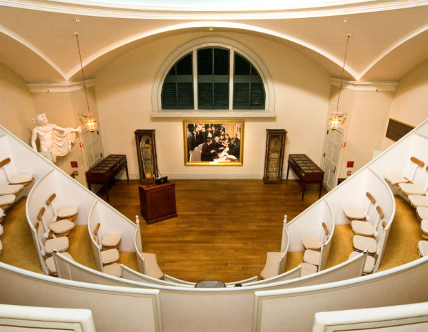
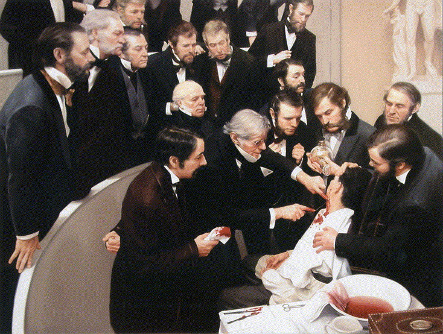

September 22, 2021 | 6 min read
From the advent of early surgical procedures to manipulate body organs to diagnose or cure an ailment, the necessity of developing techniques to induce unconsciousness in the patient to prevent their interference and alleviate the excruciating pain during the surgery became clear. The earliest recorded techniques of anaesthesia include ‘knock-out’ blows to the head and bilateral carotid artery compression. Quite obviously, these methods ended up causing more harm than good leading to head trauma, obstructing the flow of blood to the brain, and in some cases, even death. With time, patients were made to ingest herbal mixtures and/or ethanol. This was equally inefficient and rarely reliable. Although it may be noted that several of these early concoctions have helped in the development of a number of drugs being used today in modern anaesthesia.
The discovery and subsequent intensive research on gases including carbon dioxide, oxygen and most significantly, nitrous oxide in the 18th century was a turning point in the history of anaesthesia. In 1799, Sir Humphry Davy, a well-known chemist at the time, conducted several experiments with nitrous oxide. He was so amused with the ability of this gas to induce intense euphoria, that he nicknamed it ‘laughing gas’. He also noted that it eased the pain of his aching wisdom tooth and wrote about its potential anaesthetic properties.
Nearly four decades later, in Hartford, USA, a travelling showman and former medical student, Gardner Quincy Colton elucidated the incredible feats of nitrous oxide postulated by Davy in 1799. In the middle of his show, a young man who inhaled the gas exhibited no pain despite injuring his leg severely. The audience was mesmerized, to say the least. Among the audience was Horace Wells, a local dentist fruitlessly searching for a method to remove rotten teeth painlessly. Wells immediately realized the potential of the gas as an analgesic and swiftly obtained a supply of the gas from Colton.
The very next morning, Wells put his hunch to the test, right on himself. He had his own teeth removed by his colleague while under the influence of the gas. After a few more successful procedures on his patients, he went on to demonstrate his potentially groundbreaking findings at major medical centres around him. However, on January 20, 1845, during a demonstration at the Massachusetts General Hospital, the gas was not administered properly and the patient cried out in pain mid-procedure. At a later point, the patient himself admitted that he remembered no pain and did not even realize his tooth was removed. But the audience shouted cries of “humbug” and dismissed his findings as a hoax. This broke Wells’ spirit and he became so upset that he slowly faded from the scene.
A former student and associate of Wells, William Morton, was present in the audience that day. He was enrolled at Harvard Medical School at the time. Unlike Wells, Morton was not as faint-hearted. He realized the prospects of developing a form of analgesic and began the hunt for a more reliable agent. One of his contemporaries, Dr Charles Jackson, was a lecturer at Harvard Medical School. The extent of Jackson's contributions is still widely debated, it is believed that Morton stumbled upon ether with some guidance from Jackson. Regardless, it was Morton alone who went on to study the effects of ether in great detail and conducted trials on his patients.
On September 30, 1846, Morton painlessly performed a tooth extraction after administering ether to a patient. This was widely publicized and caught the eye of Henry Jacob Bigelow, the dean of Harvard Medical School. He invited Morton to showcase the prowess of ether at an operating theatre of Massachusetts General Hospital.
The historic demonstration finally took place on October 16, 1846, now known as ‘Ether Day’. John Collins Warren, a surgeon, allowed Morton to administer ether to a patient, Edward Gilbert Abbott, who had a tumour on his neck. The tumour was removed painlessly with absolutely no sign of distress from the patient. After the procedure, once Abbott regained consciousness, he said, "Feels as if my neck's been scratched". Warren then turned to the spectators and uttered "Gentlemen, this is no Humbug", a reference to Horace Wells' unsuccessful demonstration in the same theatre the previous year. The news of this novel finding spread across the medical field both in America and abroad like wildfire. A new era had dawned in surgical medicine with the finding of one of the first-ever crude forms of anaesthesia with substantial positive results and significant efficiency.
The MGH theatre came to be known as the Ether Dome and has been preserved as a monument to this historic event. Despite the controversy of the credit, the legacy of the discovery of the first efficient surgical anaesthetic was a turning point in the field of surgical medicine.
 Figure 1. Ether Dome
 Figure 2. The demonstration on Ether day